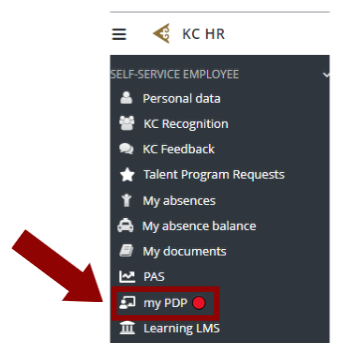
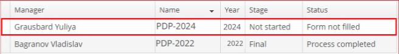
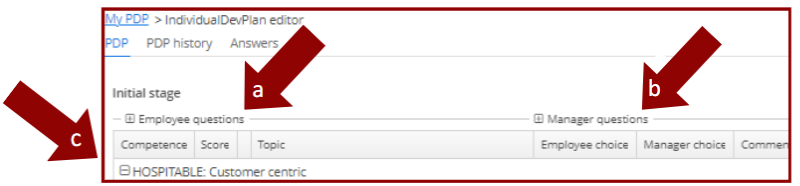
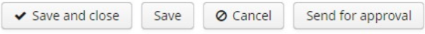
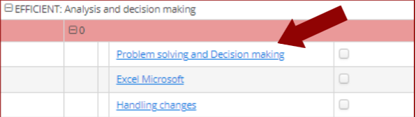
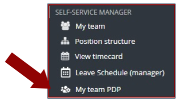
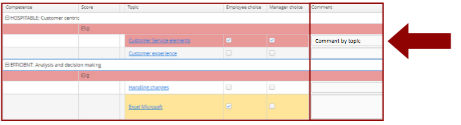

PDP Manual
Personal Development Plan - Руководство по заполнению плана личного развития
О программе PDP
В этом разделе вы найдете подробную информацию о том, как правильно заполнять PDP (Personal Development Plan) - план личного развития. Руководство предоставляет пошаговые инструкции и рекомендации, чтобы помочь вам эффективно заполнить свой PDP и использовать его в качестве инструмента для достижения ваших личных и профессиональных целей.
PDP является инструментом самоанализа и планирования, который позволяет людям осознать свои сильные и слабые стороны, определить области, в которых они хотят развиваться, и разработать конкретные шаги для достижения своих целей. Он помогает создать структуру и направление для личного и профессионального роста, а также обеспечивает фокус и мотивацию в процессе развития.
Процесс работы с PDP занимает весь год, и делится на 3 этапа:
- Первый этап происходит в начале года, когда вы встречаетесь со своим руководителем и ставите цели по саморазвитию на текущий год.
- Второй этап начинается в середине лета, когда половина пути уже пройдена. Вместе со своим руководителем вы обсуждаете прогресс – что уже удалось реализовать, а что еще предстоит сделать.
- Третий этап запускается в ноябре-декабре, и его цель – подведение итогов прошедшего года.
Но это не значит, что между этапами ничего не нужно делать. Наоборот, в это время и происходит основная работа по саморазвитию – вы читаете книги, смотрите обучающие видео, применяете полученные знания и навыки на практике и т.д.
Важно: заполнение PDP не является запросом на проведение обучения. Это ваш личный план развития. Обучение может являться одним из составляющих элементов плана. Подробнее об этом вы можете узнать в онлайн курсе в LMS.
Мы желаем вам успешного применения PDP в вашей работе и надеемся, что руководство станет полезным ресурсом для вашего развития. Если у вас возникнут вопросы или потребуется дополнительная поддержка, не стесняйтесь обращаться к нашей команде e-learning по адресу: elearning.team@airastana.com.
Доступ к системе PDP
PDP (Personal Development Plan) можно открыть через веб-сайт KC HR, в разделе "Self-service employee" – "My PDP".
В открывшемся окне есть список всех форм PDP за каждый год. Нажмите на нужную форму, чтобы открыть её (только после Appraisal).
Форма PDP состоит из 3 частей:
a. Вопросы сотрудника
Раздел для ваших ответов о планах развития.
b. Вопросы руководителя
Раздел для ответов вашего руководителя.
c. Компетенции
Раздел выбора компетенций для развития.
Первый этап (начало года)
На первом этапе, в начале года, вам необходимо:
- Ответить на 2 вопроса о вашем плане развития
- Выбрать компетенции для улучшения
Для компетенций с оценкой менее 2.6 обязательно выберите хотя бы одну тему. Чтобы выбрать тему, необходимо поставить галочку в поле "Employee choice".
После заполнения вам необходимо отправить форму своему непосредственному руководителю для утверждения, нажав кнопку "Send for approval".
Для руководителей
Если вы руководитель, у вас есть доступ ко всем формам PDP вашей команды через "Self-service manager" – "My team PDP".
В форме вы увидите все ответы, введенные сотрудником. На этом этапе вам необходимо:
- Ответить на 2 вопроса о развитии сотрудника
- Выбрать приоритетные области его/её развития
- Добавить комментарии к выбранным темам
Также вы можете добавить комментарии к каждой выбранной теме. Рекомендуется использовать это поле для уточнения деталей плана развития, например, добавления конкретных задач.
Последующие этапы
В середине года начинается второй этап работы с PDP. Система отправит уведомление по электронной почте руководителю с просьбой встретиться с сотрудником для обсуждения прогресса.
Руководитель отвечает на 2 вопроса:
- Что сотрудник успешно достиг за последние шесть месяцев
- Какие навыки еще нужно развивать
Третий (и заключительный) этап заполнения формы начинается в конце года. Его цель - подвести итоги всего прогресса. Процесс полностью аналогичен второму этапу.
В конце года необходимо проверить, какие результаты развития были достигнуты согласно ранее заполненному плану.

Первый шаг в завершении Плана личного развития теперь завершен. Вы можете скачать нужную форму, нажав на неё один раз и нажав соответствующую кнопку в начале, затем распечатать её и приступить к выполнению всех шагов, указанных в плане.

PDP Manual
Personal Development Plan - Complete Guide to Filling Out Your Personal Development Plan
About the PDP Program
In this section, you will find detailed information on how to properly fill out the PDP (Personal Development Plan). The guide provides step-by-step instructions and recommendations to help you effectively complete your PDP and use it as a tool to achieve your personal and professional goals.
PDP is a self-analysis and planning tool that allows people to recognize their strengths and weaknesses, identify areas in which they want to develop, and develop specific steps to achieve their goals. It helps create structure and direction for personal and professional growth, as well as provides focus and motivation in the development process.
The PDP process takes the whole year and is divided into 3 stages:
- The first stage occurs at the beginning of the year when you meet with your manager and set self-development goals for the current year.
- The second stage begins in mid-summer when half the journey has been completed. Together with your manager, you discuss progress - what has already been achieved and what still needs to be done.
- The third stage is launched in November-December, and its purpose is to summarize the past year.
But this does not mean that nothing needs to be done between stages. On the contrary, this is when the main self-development work takes place - you read books, watch educational videos, apply the knowledge and skills gained in practice, etc.
Important: Filling out the PDP is not a request for training. This is your personal development plan. Training can be one of the constituent elements of the plan. You can learn more about this in the online course in LMS.
We wish you successful application of PDP in your work and hope that the guide will become a useful resource for your development. If you have questions or need additional support, do not hesitate to contact our e-learning team at: elearning.team@airastana.com.
PDP System Access
PDP (Personal Development Plan) can be opened via the KC HR website, in the "Self-service employee" section – "My PDP".
In the opened window there is a list of all PDP forms for each year. Click on the needed form to open it (only after Appraisal).
There are 3 parts of the form:
a. Employee questions
Section for your answers about development plans.
b. Manager questions
Section for your manager's answers.
c. Competences
Section for selecting competencies for development.
First Stage (Beginning of Year)
In the first stage, at the beginning of the year, you need to:
- Answer 2 questions about your development plan
- Choose competencies to improve
For competencies with score less than 2.6 it is mandatory to choose at least one topic. To choose the topic you need to tick on "Employee choice" field.
After that you need to send the form to your direct manager for approval by clicking "Send for approval" button.
For Managers
If you are the manager you have an access to all PDP forms for your team through "Self-service manager" – "My team PDP".
In the form you will see all answers entered by the employee. At this stage you need to:
- Answer 2 questions about your employee development
- Choose the priority areas of his/her development
- Add comments to chosen topics
Also you can add some free-text comment for each chosen topic, we recommend to use this field to specify the details of development plan, for example to add concrete tasks.
Subsequent Stages
In the middle of the year, the second stage of work with the PDP form begins. System will send e-mail notification to the manager and will ask to meet with the employee to discuss progress.
The manager answers 2 questions:
- What the employee had successfully achieved over the past six months
- What skills still need to be developed
The third (and final) stage of filling out the form begins at the end of the year. Its purpose is to summarize the whole progress. The process is completely similar to the second stage.
At the end of the year, it is necessary to check what developmental outcomes have been achieved according to the previously completed plan.
The first step in completing the Personal Development Plan is now complete. You can download the form you need by clicking on it once and pressing the appropriate button at the beginning, then print it out, and proceed to fulfil all the steps indicated in the plan.
PDP Manual
Personal Development Plan - Жеке даму жоспарын толтыру бойынша толық нұсқаулық
PDP бағдарламасы туралы
Бұл бөлімде сіз PDP (Personal Development Plan) - жеке даму жоспарын дұрыс толтыру туралы толық ақпарат таба аласыз. Нұсқаулық сіздің PDP-ны тиімді толтыруға және оны жеке және кәсіби мақсаттарыңызға жету құралы ретінде пайдалануға көмектесу үшін қадамдық нұсқаулар мен ұсыныстарды ұсынады.
PDP - бұл өзін-өзі талдау және жоспарлау құралы, ол адамдарға өз күшті және әлсіз жақтарын сезінуге, дамығысы келетін салаларды анықтауға және мақсаттарына жету үшін нақты қадамдар жасауға мүмкіндік береді. Ол жеке және кәсіби өсу үшін құрылым мен бағыт жасауға көмектеседі, сондай-ақ даму процесінде фокус пен мотивация қамтамасыз етеді.
PDP процесі бүкіл жылды алады және 3 кезеңге бөлінеді:
- Бірінші кезең жыл басында басшыңызбен кездесіп, ағымдағы жылға өзін-өзі дамыту мақсаттарын қою кезінде орын алады.
- Екінші кезең жаз ортасында жолдың жартысы өткеннен кейін басталады. Басшыңызбен бірге сіз прогресті талқылайсыз - не іске асырылды және не істеу керек.
- Үшінші кезең қараша-желтоқсанда іске қосылады және оның мақсаты - өткен жылды қорытындылау.
Бірақ бұл кезеңдер арасында ештеме істеудің қажеті жоқ дегенді білдірмейді. Керісінше, осы уақытта өзін-өзі дамытудың негізгі жұмысы жүреді - сіз кітаптарды оқисыз, оқыту бейнелерін көресіз, алынған білім мен дағдыларды практикада қолданасыз және т.б.
Маңызды: PDP толтыру оқыту өткізуге сұрау емес. Бұл сіздің жеке даму жоспарыңыз. Оқыту жоспардың құрамдас элементтерінің бірі болуы мүмкін. Бұл туралы толығырақ LMS-тегі онлайн курстан біле аласыз.
Біз сізге жұмысыңызда PDP-ны сәтті қолдануды тілейміз және нұсқаулық сіздің дамуыңыз үшін пайдалы ресурс болады деп үміттенеміз. Сұрақтарыңыз болса немесе қосымша қолдау қажет болса, біздің e-learning командасына хабарласуды ұятпаңыз: elearning.team@airastana.com.